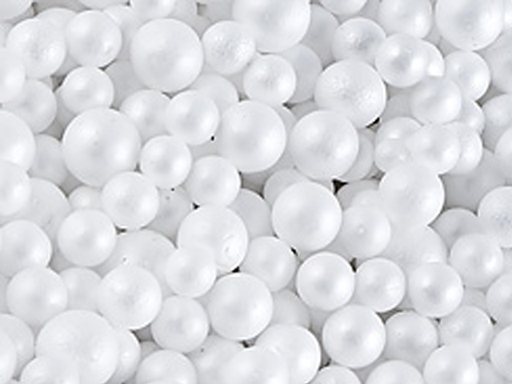

Maxi Plast является официальным представителем международной компании "Selena Group" в Армении, производящей широкий спектр продуктов строительной химии – полиуретановые пены, клеи, герметики, системы изоляции и другиe материалы.

производство пенопласта
Maxi Plast специализируется на производстве и продажах пенополистирольных плит, термоблоков, пенопластовой крошки, гранулята, и других пенопластовых изделий в том числе - Теплоизоляция, Фасадные решения, Реклама, Декорации
ЧТО ТАКОЕ ПЕНОПОЛИСТИРОЛ?
Пенополистирол (пенопласт) – изоляционный материал белого цвета на 98% состоящий из воздуха, заключённого в миллиарды микроскопических тонкостенных клеток из вспенённого полистирола. Иначе говоря, для изготовления целой изоляционной плиты необходимо лишь 2% сырья. Это связано с его расширением в ходе производственного процесса.
Пенополистирол является нейтральным материалом, который, в отличие от ряда других популярных термоизоляционных материалов, не выделяет никаких вредных для человека и его окружения веществ, а срок его годности не ограничен. Он экологически безопасен как в процессе работы с ним, так и на протяжении всего периода его дальнейшей эксплуатации. Пенополистирол долговечен, не дает трещин, не является питательной средой для микроорганизмов, грызунов и другой живности, не загнивает, не плесневеет и не разлагается. Воздухопроницаемость позволяет зданию дышать.